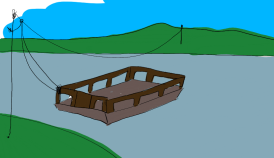

Przeprawa promowa "Wydra"
Regulamin

Ręczny prom na linie między Brzegiem Górnym a Kępą Łąkową, przez rzekę Mętną.
Przeprawa trwa około 6 minut. Prom zabiera 12 osób i 2 rowery; nie przewozi samochodów ani motocykli.
Kursujemy od 1 maja do 30 września. Przy wysokiej wodzie prom stoi: aktualny stan rzeki podaje
serwis hydrologiczny IMGW.
Jak się przeprawić
- Zadzwonić dwa razy dzwonem na słupie przy kładce.
- Poczekać, aż przewoźnik podpłynie i przycumuje prom.
- Wejść na prom po trapie.
- Postawić rower przy burcie, trzymać go za kierownicę i usiąść na ławce.
- Zapłacić przewoźnikowi przed odbiciem od brzegu.
- Wysiąść na drugim brzegu na znak przewoźnika.
Na promie nie wolno:
- wchodzić z psem bez smyczy
- stać przy linie
- skakać z promu do wody
- wnosić szkła
- płynąć dzieciom do lat 10 bez opieki dorosłego
Słowniczek przeprawy
- Przewoźnik
- Osoba, która prowadzi prom i odpowiada za pasażerów.
- Trap
- Pomost między brzegiem a promem.
- Lina prowadząca
- Stalowa lina nad rzeką, po której prom przesuwa się z brzegu na brzeg.
- Cumowanie
- Przywiązanie promu do brzegu.
- Kępa
- Wyspa albo kawałek lądu, który przy wysokiej wodzie bywa zalewany.